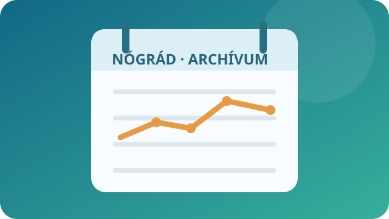
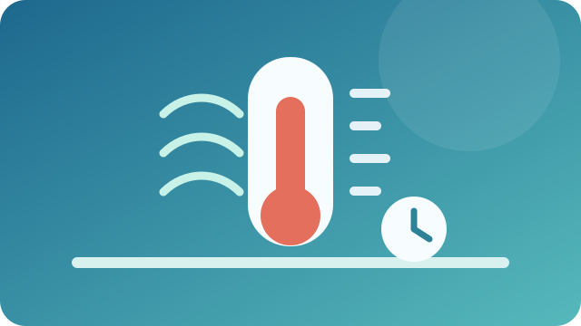

Warning: truncated output (original token count: 16831)
Total output lines: 178

<!doctype html>
<html lang="hu">
<head>
<meta charset="utf-8">
<meta name="viewport" content="width=device-width, initial-scale=1">
<meta name="theme-color" content="#062d4b">
<meta name="description" content="Helyi hírek, közlekedés, időjárás, vállalkozások és programok Nógrádban. Háztartási és kertészeti tippek Palócföldön. A PalócIndex fejlesztés alatt áll.">
<title>PalócIndex – Helyi hírek és információk Nógrádból</title>
<link rel="canonical" href="https://palocindex.hu/">
<link rel="icon" type="image/png" sizes="512x512" href="/icon-512.png">
<link rel="apple-touch-icon" href="/apple-touch-icon.png">
<link rel="manifest" href="/site.webmanifest">
<meta property="og:type" content="website">
<meta property="og:site_name" content="PalócIndex">
<meta property="og:title" content="PalócIndex – Helyi hírek és információk Nógrádból">
<meta property="og:description" content="Helyi hírek, közlekedés, időjárás, vállalkozások és programok Nógrádban. Háztartási és kertészeti tippek Palócföldön. A PalócIndex fejlesztés alatt áll.">
<meta property="og:url" content="https://palocindex.hu/">
<meta property="og:image" content="https://palocindex.hu/assets-v5/hero.jpg">
<meta name="twitter:image" content="https://palocindex.hu/assets-v5/hero.jpg">
<meta name="twitter:card" content="summary">
<script type="application/ld+json">
{
  "@context": "https://schema.org",
  "@type": "WebSite",
  "name": "PalócIndex",
  "alternateName": "PalocIndex",
  "url": "https://palocindex.hu/"
}
</script>
<style>
:root{--navy:#072d4b;--navy2:#053351;--dark:#061f38;--green:#19a529;--lime:#65d33a;--ink:#122e42;--muted:#637789;--pale:#f3f8fb;--line:#e0eaf0;--white:#fff;--shadow:0 12px 30px rgba(13,48,74,.11)}
*{box-sizing:border-box}html{scroll-behavior:smooth}body{margin:0;background:var(--pale);font-family:system-ui,-apple-system,"Segoe UI",Arial,sans-serif;color:var(--ink);line-height:1.55}a{color:inherit}a:focus-visible,button:focus-visible{outline:3px solid #ffd449;outline-offset:3px}.container{max-width:1420px;margin:0 auto;padding:0 26px}.sr-only{position:absolute;width:1px;height:1px;overflow:hidden;clip:rect(0,0,0,0)}
.announcement{background:#064b55;color:#e5fff4;text-align:center;font-size:.76rem;font-weight:700;padding:7px 14px;letter-spacing:.015em}.masthead{background:linear-gradient(100deg,#073252,#075b83 72%,#0e8ab2);color:white}.head-inner{min-height:100px;display:flex;align-items:center;gap:24px}.brand{display:flex;align-items:center;text-decoration:none;gap:12px;flex-shrink:0}.brand-logo{width:68px;height:59px}.brand-title{font-weight:950;letter-spacing:-.069em;font-style:italic;font-size:clamp(2rem,3.2vw,3.1rem);line-height:1}.brand-title span{color:#54d925}.brand-caption{font-size:.78rem;font-weight:680;color:#e8f4fc;letter-spacing:.015em}.head-right{margin-left:auto;display:flex;align-items:center;gap:23px}.head-claim{font-weight:850;text-align:right;font-style:italic;line-height:1.25;color:#d9ffc9}.search-demo{display:flex;align-items:center;gap:8px;background:#fff;color:#456078;padding:11px 15px;border-radius:99px;min-width:250px;font-size:.84rem}.search-demo span{margin-left:auto}.search-demo small{font-size:.67rem;background:#edf4f5;color:#456078;padding:2px 7px;border-radius:99px}
nav{background:#06233c;color:#fff;box-shadow:0 3px 15px #0002;position:relative;z-index:3}.nav-inner{display:flex;flex-wrap:wrap;justify-content:center;align-items:center;gap:2px;overflow-x:visible;scrollbar-width:none}.nav-inner a{color:#e3f2ff;text-decoration:none;white-space:nowrap;padding:13px 14px;font-size:.88rem;font-weight:750;border-radius:8px;transition:background .2s}.nav-inner a:hover{background:#0c4e76}.nav-inner a.active{background:#13a729;color:white}.nav-inner a:last-child{margin-left:0}
.hero{height:405px;position:relative;isolation:isolate;background:#235b75}.hero:before{content:"";position:absolute;inset:0;background:url("assets-v5/hero.jpg") center 53%/cover no-repeat;z-index:-2}.hero:after{content:"";position:absolute;inset:0;background:linear-gradient(90deg,rgba(1,26,49,.91) 0%,rgba(3,40,59,.77) 34%,rgba(6,33,52,.28) 69%,rgba(4,24,31,.05) 100%);z-index:-1}.hero-content{height:100%;display:flex;align-items:center;justify-content:space-between;gap:26px;padding-bottom:35px}.hero-copy{color:#fff;max-width:730px}.hero-kicker{display:inline-flex;align-items:center;gap:9px;background:#ffffff2d;border:1px solid #ffffff40;border-radius:30px;padding:6px 14px;margin-bottom:16px;font-size:.8rem;font-weight:850;letter-spacing:.06em}.hero h1{font-size:clamp(2.4rem,4.1vw,4.7rem);letter-spacing:-.052em;line-height:1.05;margin:0 0 16px;text-shadow:0 3px 17px #01142475}.hero p{font-size:clamp(1rem,1.5vw,1.16rem);line-height:1.65;max-width:670px;margin:0 0 22px;color:#f1f8fc}.hero-buttons{display:flex;flex-wrap:wrap;gap:12px}.button{display:inline-flex;align-items:center;justify-content:center;gap:8px;padding:12px 21px;border-radius:13px;font-weight:850;text-decoration:none;transition:transform .2s,filter .2s}.button:hover{transform:translateY(-2px);filter:brightness(1.05)}.button.green{background:linear-gradient(#37d72e,#0f9c22);box-shadow:0 8px 24px #001e2063;color:#fff}.button.ghost{border:2px solid #fff;background:#092d4885;color:white}.hero-places{min-width:215px;padding:20px;border-radius:18px;background:#0b37598c;border:1px solid #def3ee5a;color:#fff;backdrop-filter:blur(3px)}.hero-places strong{display:block;font-size:.87rem;margin-bottom:8px}.place-chip{display:inline-block;border:1px solid #b8ffba7c;background:#0e6a5995;margin:4px 3px 0 0;padding:5px 9px;border-radius:24px;font-size:.77rem;font-weight:700}
.topics{position:relative;z-index:2;margin-top:-55px}.topic-grid{background:#fff;border-radius:22px;box-shadow:0 19px 48px #123d5c31;padding:14px;display:grid;grid-template-columns:repeat(5,minmax(0,1fr));gap:8px}.topic{border-radius:13px;min-height:147px;display:flex;align-items:center;flex-direction:column;text-align:center;justify-content:center;text-decoration:none;color:#fff;padding:12px 6px;transition:transform .2s;position:relative;isolation:isolate;overflow:hidden;background:#173f50}.topic:before{content:"";position:absolute;inset:0;z-index:-1;background:linear-gradient(180deg,#102d3780 0%,#0b253bc7 100%)}.topic:after{content:"";position:absolute;z-index:-1;left:-10%;right:-10%;bottom:-75px;height:140px;background:#ffffff18;border-radius:45%}.topic-image{position:absolute;inset:0;z-index:-2;width:100%;height:100%;object-fit:cover;transition:transform .28s ease}.topic:hover{transform:translateY(-4px)}.topic:hover .topic-image{transform:scale(1.045)}.topic strong,.topic small{position:relative;z-index:1}.topic strong{font-size:.91rem;line-height:1.16}.topic small{font-size:.69rem;line-height:1.3;margin-top:7px;font-weight:630;color:#fff}.t-blue{background-color:#0a5ac3}.t-forest{background-color:#007343}.t-orange{background-color:#ed6900}.t-purple{background-color:#6220b3}.t-rose{background-color:#c81b4a}.t-turquoise{background-color:#067489}.t-earth{background-color:#984108}.t-leaf{background-color:#237812}
.content{padding-top:8px}.quick-grid{display:grid;grid-template-columns:1fr 1fr;gap:17px}.quick{background:#fff;border:1px solid #d7e6eb;border-radius:15px;box-shadow:0 5px 22px #07335210;overflow:hidden}.quick-head{padding:11px 18px;color:white;font-size:1.16rem;font-weight:900;display:flex;align-items:center;gap:10px}.quick.weather .quick-head{background:linear-gradient(105deg,#075ab0,#2f93db)}.quick.traffic .quick-head{background:linear-gradient(105deg,#047741,#169923)}.quick-body{min-height:108px;padding:16px 20px;display:flex;gap:14px;align-items:center}.quick-symbol{font-size:2.7rem}.quick-text strong{font-size:1.02rem}.quick-text p{color:var(--muted);font-size:.87rem;margin:5px 0 0}.quick .flag{margin-left:auto;color:#206443;font-size:.69rem;font-weight:850;background:#e5faea;padding:5px 9px;border-radius:100px;white-space:nowrap}.quick.weather .flag{color:#176f9f;background:#e9f5ff}
.main-grid{display:grid;grid-template-columns:1.2fr 1fr;gap:21px;margin-top:31px;align-items:start}.main-grid section,.main-grid aside{min-width:0}.section-head{display:flex;align-items:center;justify-content:space-between;gap:12px;margin-bottom:13px}.section-head h2{font-size:clamp(1.2rem,1.65vw,1.55rem);margin:0;letter-spacing:-.035em;line-height:1.19}.section-head h2:before{content:"";display:inline-block;height:21px;width:5px;background:#18b92a;border-radius:3px;vertical-align:-4px;margin-right:10px}.section-head a{font-size:.77rem;font-weight:850;text-decoration:none;color:#188324;white-space:nowrap}.panel{background:#fff;border:1px solid var(--line);border-radius:16px;box-shadow:var(--shadow);overflow:hidden}.feature img{display:block;width:100%;height:200px;object-fit:cover}.feature-info{padding:17px 20px}.overline{display:inline-flex;align-items:center;gap:5px;color:#11915a;font-weight:850;font-size:.74rem}.feature h3{font-size:1.26rem;line-height:1.21;letter-spacing:-.022em;margin:7px 0}.feature p{margin:0;color:#607587;font-size:.9rem}.feature .demo-label{background:#e7f5ed;color:#087c48;padding:4px 9px;border-radius:99px;font-size:.72rem;font-weight:850;display:inline-block;margin-top:12px}.news-mini{display:flex;gap:10px;padding:10px 14px;border-top:1px solid #eef2f4}.news-mini img{width:85px;height:65px;object-fit:cover;border-radius:9px;flex-shrink:0}.news-mini strong{display:block;font-size:.86rem;line-height:1.27}.news-mini small{color:#687d88;font-size:.72rem}.tips-stack{display:grid;gap:12px}.tip{display:flex;gap:12px;padding:11px;align-items:center}.tip img{width:102px;height:102px;object-fit:cover;border-radius:10px;flex-shrink:0}.tip strong{display:block;line-height:1.3;font-size:.94rem}.tip p{font-size:.8rem;color:#536e7b;line-height:1.4;margin:5px 0 0}.tip .pill{display:inline-block;font-size:.68rem;font-weight:900;color:#137c32;background:#e4f7e8;padding:4px 9px;margin-top:8px;border-radius:12px}.extra-tips{margin-top:11px;background:#edf8ed;border-radius:13px;padding:16px 19px}.extra-tips h3{margin:0 0 8px;font-size:.98rem;color:#177544}.extra-tips p{font-size:.82rem;color:#587a70;margin:0}
.contact-card{background:#fff;border:1px solid #abd6f9;border-radius:18px;box-shadow:0 14px 29px #196bb522;padding:17px}.agent-top{background:linear-gradient(125deg,#ecf6ff,#efeaff);border-radius:12px;padding:17px;display:flex;gap:13px;align-items:center}.agent-icon{font-size:2.6rem}.agent-top h3{margin:0;font-size:1.04rem}.agent-top p{font-size:.77rem;margin:4px 0 0;color:#536a84}.contact-channel{display:flex;align-items:center;gap:13px;margin-top:11px;border-radius:11px;padding:13px;border:1px solid #dce6f0;background:#f9fbff}.contact-channel .em{font-size:1.55rem}.contact-channel strong{font-size:.91rem;display:block}.contact-channel small{font-size:.7rem;color:#5d7081;display:block}.contact-channel.messenger{background:linear-gradient(120deg,#075fe2,#2c8bfa);color:#fff;border:0}.contact-channel.messenger small{color:#eaf3ff}.coming-note{margin:14px 2px 0;font-size:.74rem;color:#6d7780;line-height:1.45}.events{margin-top:17px}.event{padding:13px 16px;border-bottom:1px solid #e7edf2;display:flex;gap:12px;align-items:center}.event:last-child{border:0}.event-date{padding:8px 10px;background:#e8e3ff;color:#5123b9;text-align:center;border-radius:10px;min-width:57px;font-weight:900;font-size:.78rem}.event-date span{display:block;font-size:.65rem}.event strong{font-size:.83rem;line-height:1.3}.event small{display:block;color:#667b89;font-size:.7rem}.about-band{margin-top:40px;background:linear-gradient(110deg,#e8f5ea,#e9f6ff);border-top:1px solid #d2e6da;border-bottom:1px solid #d2e6da;padding:31px 0}.about-grid{display:grid;grid-template-columns:2fr repeat(3,1fr);gap:22px;align-items:center}.about-title h2{margin:4px 0;font-size:1.6rem;line-height:1.15}.about-title p{margin:0;color:#516c7a;font-size:.87rem}.value{display:flex;align-items:center;gap:10px;font-weight:830;font-size:.88rem}.value .ico{font-size:1.85rem}.footer{background:linear-gradient(95deg,#063a49,#065644);color:#effffe;padding:29px 0}.footer-grid{display:flex;justify-content:space-between;gap:35px;align-items:start}.footer h2{margin:0;font-size:1.5rem;letter-spacing:-.045em}.footer h2 span{color:#65db43}.footer p{max-width:760px;font-size:.78rem;color:#c9e3de;line-height:1.6}.footer small{font-size:.74rem;color:#bed8d8;text-align:right}.disclaimer{padding:10px 20px;text-align:center;background:#e7f2ed;color:#45695c;font-size:.73rem;font-weight:700}
@media(max-width:1280px){.topic-grid{grid-template-columns:repeat(5,minmax(0,1fr))}.topic{min-height:134px}.main-grid{grid-template-columns:1.2fr 1fr}.aside-col{grid-column:1/-1;display:grid;grid-template-columns:minmax(0,1fr);gap:0}.events{margin-top:0}}
@media(min-width:701px) and (max-width:1280px){.job-region-links{grid-template-columns:repeat(3,minmax(0,1fr))}}
@media(max-width:900px){.topic-grid{grid-template-columns:repeat(2,minmax(0,1fr))}.head-claim,.search-demo{display:none}.hero-places{display:none}.hero h1{font-size:3.1rem}.main-grid{grid-template-columns:1fr}.about-grid{grid-template-columns:1fr 1fr}.about-title{grid-column:1/-1}}
@media(max-width:900px){.nav-inner{flex-wrap:nowrap;justify-content:flex-start;overflow-x:auto;scrollbar-width:none;-ms-overflow-style:none}.nav-inner::-webkit-scrollbar{display:none;width:0;height:0}nav::after{content:"Menü görgethető ↔";display:block;padding:0 15px 5px;text-align:right;color:#d8ebf7;font-size:.7rem;line-height:1.2;font-weight:650}}
@media(max-width:620px){.container{padding:0 15px}.head-inner{min-height:77px}.brand-logo{width:48px;height:43px}.brand-title{font-size:2rem}.brand-caption{font-size:.59rem}.nav-inner a{padding:11px 13px;font-size:.77rem}.hero{height:400px}.hero:before{background-position:66% 50%}.hero:after{background:linear-gradient(90deg,#09283be6,#0a3042ad)}.hero-content{padding-bottom:58px}.hero h1{font-size:clamp(2.15rem,8vw,3.1rem)}.hero p{font-size:.91rem}.hero-kicker{font-size:.7rem}.topic-grid{grid-template-columns:repeat(2,1fr);gap:7px;padding:9px}.topic{min-height:128px}.topic strong{font-size:.83rem}.topic small{font-size:.65rem}.topic-icon{font-size:1.8rem}.quick-grid,.main-grid,.aside-col,.about-grid{grid-template-columns:1fr}.quick-body{min-height:100px}.aside-col{display:grid;grid-column:auto}.main-grid{gap:23px}.about-title{grid-column:auto}.footer-grid{display:block}.footer small{text-align:left}.value{font-size:.85rem}.about-band{margin-top:26px}.feature img{height:180px}.topic-grid{border-radius:16px}.container.topics{padding:0 10px}}
@media(prefers-reduced-motion:reduce){html{scroll-behavior:auto}*{transition:none!important}}

/* V7: egyértelmű előnézet, tervezett hirdetési feltételek, Android/iPhone, GYIK */
.announcement{background:#ffedb1;color:#5b3207;font-size:.91rem;padding:12px 16px;border-bottom:2px solid #dbab44}
.announcement strong{font-size:1.02rem}.announcement a{color:#5b3207;text-decoration:underline}
.plan-ribbon{display:inline-block;padding:8px 14px;border-radius:12px;background:#fff0b4;color:#663c00;font-weight:900;font-size:.83rem;margin-bottom:10px;box-shadow:0 5px 16px #183b4433}
.ad-section{padding:18px 0 6px}.ad-feature{background:linear-gradient(115deg,#0b835a,#005f85 70%,#073f5e);border-radius:24px;color:white;padding:35px 37px;display:grid;grid-template-columns:1.15fr .85fr;gap:30px;box-shadow:0 16px 38px #0f446a24}.ad-feature h2{font-size:clamp(1.7rem,2.8vw,2.55rem);line-height:1.13;margin:7px 0 13px;letter-spacing:-.04em}.ad-feature p{margin:0 0 15px;color:#e9fff4;max-width:750px}.free-tag{display:inline-block;background:#dcff9f;color:#13532b;font-weight:950;border-radius:100px;padding:7px 14px;font-size:.82rem}.ad-steps{background:#ffffff17;border:1px solid #ffffff46;border-radius:18px;padding:23px}.ad-steps h3{margin:0 0 10px}.ad-steps ol{margin:0;padding-left:20px;line-height:1.8;font-size:.91rem}.ad-cta{display:inline-flex;align-items:center;text-decoration:none;font-weight:900;background:#fff;color:#08754d;padding:13px 18px;border-radius:12px;margin-top:9px}.ad-note{font-size:.8rem;color:#eaf8f7}
.join-section{padding:57px 0 60px;background:#edf7fa;border-top:1px solid #d2e7ec}.join-grid{display:grid;grid-template-columns:repeat(2,minmax(0,1fr));gap:19px}.join-panel{background:#fff;border:1px solid #d8e8eb;border-radius:20px;padding:26px;box-shadow:0 8px 18px #0c3b5610}.join-panel h3{font-size:1.38rem;margin:0 0 11px}.join-panel ol{padding-left:22px;margin:0 0 15px;line-height:1.85}.join-panel .platform{display:inline-block;font-weight:900;font-size:.76rem;border-radius:50px;background:#eaf8ed;color:#11703e;padding:6px 10px;margin-bottom:9px}.join-note{font-size:.88rem;color:#547181}
.faq-section{padding:57px 0 72px}.faq-grid{display:grid;grid-template-columns:repeat(2,minmax(0,1fr));gap:14px}.faq-grid details{background:#fff;border:1px solid #dce8ea;border-radius:14px;box-shadow:0 4px 15px #0b315b09;padding:16px 20px}.faq-grid summary{font-size:.99rem;font-weight:850;cursor:pointer;list-style:none;display:flex;align-items:flex-start;gap:11px}.faq-grid summary::-webkit-details-marker{display:none}.faq-grid summary::before{content:"+";display:inline-grid;place-items:center;flex:0 0 24px;width:24px;height:24px;margin-top:-2px;border-radius:50%;background:#eef5ff;color:#24618a;font-size:1.15rem;line-height:1}.faq-grid details[open] summary::before{content:"−";background:#e6f5ea;color:#197b38}.faq-grid summary:focus-visible{outline:3px solid #176eae;outline-offset:3px;border-radius:5px}.faq-grid p{font-size:.91rem;color:#4f6b77;margin:11px 0 0}.faq-intro{max-width:850px;color:#56707a;margin-bottom:24px}
@media(max-width:860px){.ad-feature,.join-grid,.faq-grid{grid-template-columns:1fr}.ad-feature{padding:25px 23px}.ad-steps{padding:19px}}
@media(max-width:560px){.announcement{font-size:.8rem}.ad-section{padding-top:33px}.faq-section{padding:38px 0}.join-section{padding:38px 0}.join-panel{padding:21px}}
@media(max-width:620px){.hero{height:auto;min-height:400px}.hero-content{height:auto;min-height:400px;align-items:flex-start;padding-top:32px;padding-bottom:78px}.hero-copy{width:100%}}
.county-profile{margin-top:24px;padding-top:23px;padding-bottom:23px;border:1px solid #d1e8dd;border-radius:18px;background:linear-gradient(120deg,#f0fbf4,#edf8ff);box-shadow:0 8px 22px #0b315b0a}.county-profile .section-head{margin-bottom:8px}.county-profile-status{display:inline-flex;align-items:center;padding:6px 10px;border-radius:999px;background:#fff4d6;color:#74520b;font-size:.76rem;font-weight:800}.county-profile-intro,.county-profile-placeholder{margin:7px 0 14px;color:#526a78;font-size:.9rem}.county-stats{display:grid;grid-template-columns:repeat(4,minmax(0,1fr));gap:10px}.county-stat{display:grid;gap:2px;min-height:95px;padding:15px;border:1px solid #d9ebe1;border-radius:13px;background:#fff}.county-stat strong{font-size:clamp(1.25rem,2vw,1.8rem);line-height:1.2;color:#0b614c}.county-stat span{font-weight:800;color:#203f4c}.county-stat small{color:#687e89}.county-profile-sources{display:flex;flex-wrap:wrap;gap:8px 20px;margin-top:13px;font-size:.82rem}.county-profile-sources a,.county-profile-placeholder a{color:#08704f;font-weight:750}.county-profile-placeholder[hidden]{display:none}@media(max-width:620px){.county-profile{padding:17px 14px}.county-stats{grid-template-columns:repeat(2,minmax(0,1fr))}.county-stat{min-height:84px;padding:12px}.county-stat strong{font-size:1.35rem}}

/* Tight, edge-to-edge home strip: remove the empty gutters highlighted in the review. */
.topics{margin-bottom:0;padding:0}.container.topics,.ad-section>.container,.content.container{max-width:1420px;padding-left:0;padding-right:0}.topic-grid{display:flex;flex-wrap:wrap;gap:0;padding:0;border-radius:0;box-shadow:none;background:transparent}.topic{flex:1 1 20%;min-width:180px;border-radius:0;min-height:160px}.ad-section{padding:0}.ad-feature{border-radius:0}.content{padding-top:0}.portal-grid{margin-top:0}
@media(max-width:900px){.topic{flex-basis:25%;min-width:0}}
@media(max-width:620px){.topic{flex-basis:50%;min-height:140px}.ad-feature{gap:0;padding:24px 18px}}
</style>
<link rel="icon" type="image/svg+xml" href="paloc-icon.svg">
<link rel="apple-touch-icon" sizes="180x180" href="apple-touch-icon.png">
<link rel="manifest" href="site.webmanifest">
<meta name="apple-mobile-web-app-title" content="PalócIndex">
<meta name="application-name" content="PalócIndex">
<link rel="stylesheet" href="/v9.css?v=20261121-eurostat-disclaimer"><script src="/site.js?v=20261121-eu-research-review" defer></script><style id="palocindex-visual-refresh">
body{background:radial-gradient(ellipse at 5% 10%,rgba(57,151,193,.28),transparent 34%),radial-gradient(ellipse at 92% 18%,rgba(76,157,105,.25),transparent 32%),radial-gradient(ellipse at 52% 90%,rgba(197,133,63,.18),transparent 39%),linear-gradient(132deg,#dceaf0 0%,#e4e9ef 48%,#e6ecde 100%);background-attachment:fixed}
main .topic-grid{background-image:radial-gradient(ellipse at 8% 0%,rgba(57,156,149,.24),transparent 40%),linear-gradient(132deg,#c8e1e9,#d4e5d6 49%,#ead8b9);border:1px solid rgba(55,108,123,.28)}
.portal-grid{display:grid;grid-template-columns:minmax(0,1fr);align-items:stretch;gap:12px;margin-top:10px}.portal-column{display:grid;align-content:start;gap:18px;min-width:0}.portal-column--updates{display:grid;grid-template-columns:minmax(0,1fr);align-content:start;gap:18px}.portal-column--updates>section{display:block;position:relative;min-width:0}.portal-column--weather>.county-profile{margin:0;padding:19px;border-radius:20px;background-image:radial-gradient(ellipse at 7% 0%,rgba(62,151,192,.22),transparent 42%),linear-gradient(135deg,#cde4ed,#d9e8d0 54%,#ead9bc);border:1px solid rgba(62,114,132,.25)}.portal-column--updates>.national-news,.portal-column--updates>.quick{margin:0}
.portal-grid section.quick{background-image:radial-gradient(ellipse at 5% 2%,rgba(50,154,190,.24),transparent 42%),linear-gradient(135deg,#c6e1ea,#d5e6d1 55%,#ead5b1);border:1px solid rgba(54,112,132,.3);border-radius:21px;box-shadow:0 13px 30px rgba(25,68,83,.12)}.portal-grid section.quick.traffic{background-image:radial-gradient(ellipse at 100% 4%,rgba(219,126,69,.3),transparent 44%),linear-gradient(135deg,#efd0ad,#d4e4cf 55%,#c4dfe9)}.portal-grid section.quick .quick-head{background-image:linear-gradient(108deg,#12566f,#277f7d 55%,#466795)}.portal-grid section.quick.traffic .quick-head{background-image:linear-gradient(108deg,#91442f,#b66336 52%,#247773)}
.portal-grid .quick-body{align-items:start;min-height:0}.portal-grid .quick-symbol{display:grid;place-items:start center;grid-column:1;grid-row:1;font-size:0}.portal-grid .quick-symbol-art{width:74px;height:58px;object-fit:cover;border-radius:14px}.portal-grid .quick-text{grid-column:2;grid-row:1}.portal-grid .quick .flag{grid-column:3;grid-row:1;align-self:start;margin:0;background-image:linear-gradient(120deg,#bcdcc7,#b9d8e4);color:#17564b}.portal-grid .traffic-source-links{grid-template-columns:repeat(4,minmax(0,1fr));gap:10px}.portal-grid .image-link-row .image-link-card{background-image:linear-gradient(145deg,#c5dfe9,#d4e6d1 55%,#ead4af);border-color:rgba(51,108,128,.28);border-radius:15px}
.portal-grid section.national-news{background-image:radial-gradient(ellipse at 0 0%,rgba(67,160,112,.21),transparent 42%),linear-gradient(132deg,#cde8d4,#c9dfeb 58%,#e9d8b9);border-color:rgba(52,117,97,.27)}.portal-grid section.international-news{background-image:radial-gradient(ellipse at 100% 0%,rgba(130,107,197,.24),transparent 42%),linear-gradient(132deg,#ccdbee,#e0d1eb 57%,#ecd9b7)}.portal-grid .national-news-card,.portal-grid .national-news-item{background-image:linear-gradient(135deg,#c9e0e8,#dbe5cf 54%,#ead6b8);border-color:rgba(66,110,129,.25)}.portal-grid .national-news-item:nth-child(3n+2){background-image:linear-gradient(135deg,#ded0ec,#cbdfe9 56%,#ead8bd)}.portal-grid .national-news-item:nth-child(3n){background-image:linear-gradient(135deg,#e8d2b4,#d1e5d5 56%,#c9dfea)}
.portal-grid .weather-daily…4831 tokens truncated…"image-link-row weather-source-links"><a class="image-link-card" href="https://odp.met.hu/weather/text_forecast/regional_forecast/flRs/" target="_blank" rel="noopener noreferrer"><span>Nógrád regionális előrejelzés archívuma</span></a></div><p class="weather-terms-note"><a href="https://odp.met.hu/ODP_altalanos_felhasznalasi_feltetelek.pdf" target="_blank" rel="noopener noreferrer">Felhasználási feltételek ↗</a></p><section class="weather-observations-panel" aria-label="Részletes nógrádi időjárási mérések"><details class="weather-observations-disclosure" aria-labelledby="weather-observations-heading"><summary class="weather-observations-summary"><div class="weather-observations-header"><div><h3 id="weather-observations-heading">Részletes mért időjárás</h3><p>Órás, hivatalos mérések mind a 7 aktív nógrádi állomásról · nem előrejelzés</p><p id="weather-observations-status" class="weather-observations-status" role="status" aria-live="polite">A friss állomásadatok ellenőrzése…</p></div><span class="weather-observations-badge" id="weather-observations-badge">Ellenőrzés alatt</span></div><span class="weather-observations-toggle-label">Részletes állomásadatok<span class="weather-observations-toggle-icon" aria-hidden="true"></span></span></summary><div class="weather-observations-content"><div id="weather-observations-stations" class="weather-observations-stations"></div><p id="weather-observations-placeholder" class="weather-observations-placeholder">Most nincs friss, ellenőrzött állomásmérés; a lejárt értékeket nem mutatjuk. Az aktuális adatokat a HungaroMet hivatalos oldalán ellenőrizheted.</p><div class="image-link-row weather-source-links"><a class="image-link-card" href="https://odp.met.hu/climate/observations_hungary/hourly/now/" target="_blank" rel="noopener noreferrer"><span>Órás mérések</span></a></div><p class="weather-terms-note"><a href="https://odp.met.hu/climate/observations_hungary/hourly/station_meta_auto.csv" target="_blank" rel="noopener noreferrer">Állomáslista ↗</a> · <a href="https://odp.met.hu/ODP_altalanos_felhasznalasi_feltetelek.pdf" target="_blank" rel="noopener noreferrer">Felhasználási feltételek ↗</a></p><div id="weather-observations-sources" class="weather-observations-sources" hidden></div></div></details></section></div><span class="flag" id="weather-regional-badge">Ellenőrzés alatt</span></div></section>

<section class="county-profile" id="nograd-szamok" aria-labelledby="county-profile-heading"><div class="section-head"><h2 id="county-profile-heading">Nógrád számokban</h2><span class="county-profile-status" id="county-profile-status" role="status" aria-live="polite">Friss KSH-adatok ellenőrzése…</span></div><p class="county-profile-intro">A vármegye legfontosabb adatai, a KSH közlése alapján. A lakossági adatok referencia-időpontja külön fel van tüntetve.</p><div class="county-stats" id="county-profile-items" aria-label="Nógrád vármegyei alapadatok"></div><p id="county-profile-placeholder" class="county-profile-placeholder">Nincs friss, ellenőrzött adatjelölt. <a href="https://www.ksh.hu/stadat_files/fol/hu/fol0007.html" target="_blank" rel="noopener noreferrer">KSH-megyei adatok ↗</a></p><div class="county-profile-sources" id="county-profile-sources"></div></section>
</div>
<div class="portal-column portal-column--updates">
<section class="quick traffic" id="kozlekedes"><div class="quick-head">Közlekedési információk</div><div class="quick-body"><span class="quick-symbol" aria-hidden="true"></span><div class="quick-text"><strong>Útinfó, traffipax és menetrendek</strong><p>A helyi forgalmi információk és traffipaxadatok még készülnek. Indulás előtt ellenőrizd az aktuális út- és menetrendi híreket a hivatalos szolgáltatóknál.</p><div class="image-link-row traffic-source-links"><a class="image-link-card" href="https://www.utinform.hu/" target="_blank" rel="noopener noreferrer"><span>ÚTINFORM · közutak</span></a><a class="image-link-card" href="https://www.kozut.hu/ugyfelszolgalat/bejelentesek-erdeklodesek-panaszok/" target="_blank" rel="noopener noreferrer"><span>Magyar Közút · bejelentés</span></a><a class="image-link-card" href="https://www.mavcsoport.hu/mavinform" target="_blank" rel="noopener noreferrer"><span>MÁVINFORM · változások</span></a><a class="image-link-card" href="https://www.mavcsoport.hu/mav-szemelyszallitas/belfoldi-utazas/menetrendek" target="_blank" rel="noopener noreferrer"><span>Vonat- és buszmenetrend</span></a></div></div><span class="flag">Készül</span></div></section>
<section class="national-news" id="orszagos-hirek" aria-labelledby="national-news-heading"><div class="section-head"><h2 id="national-news-heading">Országos hírek</h2><span class="national-news-status" id="national-news-status" role="status" aria-live="polite">Napi forrásellenőrzés</span></div><div class="national-news-card" id="national-news-placeholder"><span class="national-news-icon" aria-hidden="true">🌍</span><div><strong>Forrásolt országos hírek</strong><p>A KSH nyílt licencű hírfolyamát naponta ellenőrizzük. A cikkek automatikus nyilvános közzététele még nincs bekapcsolva. Jelenleg nincs friss, megjeleníthető hír; a rendőrségi közlemények csak emberi tényellenőrzés után kerülhetnek ide.</p><div class="national-news-sources"><a class="source-image-link" href="https://www.ksh.hu/rss" target="_blank" rel="noopener noreferrer"><span>KSH hírszolgálat</span></a><a class="source-image-link" href="https://www.police.hu/hu/rss" target="_blank" rel="noopener noreferrer"><span>Rendőrségi RSS csatornák</span></a></div></div></div><div class="national-news-items" id="national-news-items" aria-label="Ellenőrzött országos hírek"></div></section>
<section class="national-news international-news" id="nemzetkozi-hirek" aria-labelledby="international-news-heading"><div class="section-head"><h2 id="international-news-heading">Nemzetközi hírek</h2><span class="national-news-status" id="international-news-status" role="status" aria-live="polite">Uniós intézményi források ellenőrzése</span></div><div class="national-news-card" id="international-news-placeholder"><span class="national-news-icon" aria-hidden="true">🌐</span><div><strong>Európai adatok és kutatási hírek</strong><p>Az Eurostat és az Európai Bizottság kutatási hírei csak frissesség-ellenőrzés, magyar szerkesztői összefoglaló és kézi tényellenőrzés után jelenhetnek meg. Jóváhagyott friss hír hiányában ez a tájékoztató marad itt.</p><div class="national-news-sources"><a class="source-image-link" href="https://ec.europa.eu/eurostat/web/rss" target="_blank" rel="noopener noreferrer"><span>Eurostat RSS-katalógus</span></a><a class="source-image-link" href="https://research-and-innovation.ec.europa.eu/node/2/rss_en" target="_blank" rel="noopener noreferrer"><span>EU kutatási hírek RSS</span></a><a href="https://ec.europa.eu/eurostat/help/copyright-notice" target="_blank" rel="noopener noreferrer">Eurostat-feltételek</a><a href="https://commission.europa.eu/legal-notice_en" target="_blank" rel="noopener noreferrer">Bizottsági újrafelhasználás</a></div></div></div><div class="national-news-items" id="international-news-items" aria-label="Ellenőrzött nemzetközi hírek"></div></section>
</div>
</div>
</div>
<div class="main-grid editorial-feed">
<section id="hirek"><div class="section-head"><h2>Hírek a térségből</h2><a href="#rolunk">A tervekről ↗</a></div><p class="official-source-note">A megyei hírek forráskártyái az önkormányzat és a kormányhivatal hivatalos oldalára vezetnek; itt csak az ellenőrzött és engedélyezett tartalom jelenik meg.</p><div class="image-link-row news-source-links"><a class="image-link-card" href="https://www.nograd.hu/hirek" target="_blank" rel="noopener noreferrer"><span>Nógrád Vármegye Önkormányzatának hírei</span></a><a class="image-link-card" href="https://kormanyhivatalok.hu/kormanyhivatalok/nograd/megye/hirek" target="_blank" rel="noopener noreferrer"><span>Nógrád Vármegyei Kormányhivatal hírei</span></a></div><div class="panel feature"><div class="feature-info"><span class="overline">📍 Palócföld · bemutató</span><h3>Minden fontos helyi információ egy helyen</h3><p>A később megjelenő híreknél települést, dátumot és ellenőrizhető forrást is feltüntetünk.</p><span class="demo-label">Nem valós hír – működési példa</span></div><div class="news-mini"><div><strong>Települési hírek és útfejlesztések</strong><small>Mintatéma · önkormányzatok</small></div></div><div class="news-mini"><div><strong>Helyi termelők és vállalkozások</strong><small>Mintatéma · vállalkozók</small></div></div><div class="news-mini"><div><strong>A környék programjai és közösségei</strong><small>Mintatéma · közösség</small></div></div></div></section>
<section id="tippek"><div class="section-head"><h2>Hasznos tippek</h2><a href="#rolunk">Milyen témák? ↗</a></div><div class="panel tips-stack"><article class="tip"><div><strong>Háztartási praktikák</strong><p>Egyszerű takarítás, rendszerezés, energiatakarékosság és otthoni ötletek.</p><span class="pill">Háztartás · terv</span></div></article><article class="tip"><a class="tip-source-image" href="https://kertmuvelo.hu/" target="_blank" rel="noopener noreferrer"><span>NÉBIH Kertművelő program</span></a><div><strong>Kertészkedés minden évszakban</strong><p>Virágápolás, ültetés, komposzt, veteményes és kerti naptár.</p><span class="pill">Kert · terv</span></div></article><article class="tip"><div><strong>Receptek, spórolás és családi tippek</strong><p>Helyi alapanyagok, olcsó receptek és praktikus ötletek.</p><span class="pill">Otthon · terv</span></div></article></div><div class="extra-tips"><h3>💚 Segítünk egymásnak</h3><p>Helyi elérhetőségek, egyszerű ügyintézési útmutatók és hasznos közösségi tudás.</p></div></section>
<div class="aside-col"><aside id="kapcsolat"><div class="section-head"><h2>Kapcsolatfelvétel hamarosan</h2></div><div class="contact-card"><div class="agent-top"><span class="agent-icon" aria-hidden="true">🤖</span><div><h3>Kapcsolati információk</h3><p>Kérdések, hírek, programok és hirdetések kezelésén dolgozunk.</p></div></div><div class="contact-channel messenger"><span class="em" aria-hidden="true">💬</span><div><strong>Messenger</strong><small>Kép- és üzenetküldés – tervezett</small></div></div><div class="contact-channel"><span class="em" aria-hidden="true">✉️</span><div><strong>info@palocindex.hu</strong><small>Kapcsolati cím – ellenőrzés alatt</small></div></div><p class="coming-note">Ezen a telefonos előnézeten nem lehet üzenetet küldeni, és személyes adatot sem kérünk vagy rögzítünk. A feltüntetett e-mail-cím még nincs visszaigazolva. Ezen az oldalon jelenleg nem lehet üzenetet küldeni.</p></div></aside>
<aside id="allasok" class="events"><div class="section-head"><h2>Álláskeresés Nógrádban</h2></div><div class="panel"><p>A PalócIndex saját állásrovata még fejlesztés alatt áll. Addig a Nemzeti Foglalkoztatási Szolgálat hivatalos VMP-keresőjében nézhetsz körül a vármegye hat központja és azok 25 km-es körzete szerint.</p><nav class="image-link-row job-region-links" aria-label="Hivatalos álláskeresés Nógrád hat térségében"><a class="image-link-card" href="https://vmp.munka.hu/allas/talalatok?feor=&amp;helyseg=Salg%C3%B3tarj%C3%A1n&amp;isk=&amp;kategoria=&amp;kereses=Keres%C3%A9s&amp;kulcsszo=&amp;oszk=&amp;tavolsag=25" target="_blank" rel="noopener noreferrer"><span>Salgótarján · 25 km</span></a><a class="image-link-card" href="https://vmp.munka.hu/allas/talalatok?feor=&amp;helyseg=Balassagyarmat&amp;isk=&amp;kategoria=&amp;kereses=Keres%C3%A9s&amp;kulcsszo=&amp;oszk=&amp;tavolsag=25" target="_blank" rel="noopener noreferrer"><span>Balassagyarmat · 25 km</span></a><a class="image-link-card" href="https://vmp.munka.hu/allas/talalatok?feor=&amp;helyseg=P%C3%A1szt%C3%B3&amp;isk=&amp;kategoria=&amp;kereses=Keres%C3%A9s&amp;kulcsszo=&amp;oszk=&amp;tavolsag=25" target="_blank" rel="noopener noreferrer"><span>Pásztó · 25 km</span></a><a class="image-link-card" href="https://vmp.munka.hu/allas/talalatok?feor=&amp;helyseg=Sz%C3%A9cs%C3%A9ny&amp;isk=&amp;kategoria=&amp;kereses=Keres%C3%A9s&amp;kulcsszo=&amp;oszk=&amp;tavolsag=25" target="_blank" rel="noopener noreferrer"><span>Szécsény · 25 km</span></a><a class="image-link-card" href="https://vmp.munka.hu/allas/talalatok?feor=&amp;helyseg=B%C3%A1tonyterenye&amp;isk=&amp;kategoria=&amp;kereses=Keres%C3%A9s&amp;kulcsszo=&amp;oszk=&amp;tavolsag=25" target="_blank" rel="noopener noreferrer"><span>Bátonyterenye · 25 km</span></a><a class="image-link-card" href="https://vmp.munka.hu/allas/talalatok?feor=&amp;helyseg=r%C3%A9ts%C3%A1g&amp;isk=&amp;kategoria=&amp;kereses=Keres%C3%A9s&amp;kulcsszo=&amp;oszk=&amp;tavolsag=25" target="_blank" rel="noopener noreferrer"><span>Rétság · 25 km</span></a></nav><p class="job-region-note">A keresés az NFSZ oldalán nyílik meg, és a találatok változhatnak; a 25 km-es keresés Nógrád vármegyén kívüli településeket is tartalmazhat. Az állásadatokat nem másoljuk át.</p><p><a href="https://nfsz.munka.hu/cikk/3693/" target="_blank" rel="noopener noreferrer">NFSZ tájékoztató és álláskeresési segítség ↗</a></p></div></aside><aside class="events" id="programok"><div class="section-head"><h2>Helyi programok</h2></div><div class="panel"><div class="event-category-grid"><div class="event"><div class="event-date"><span>PROGRAM</span></div><div><strong>Falunapok és vásárok</strong><small>Település és időpont szerint – tervezett</small></div></div><div class="event"><div class="event-date"><span>KULTÚRA</span></div><div><strong>Kulturális események</strong><small>Helyi rendezvények – tervezett</small></div></div><div class="event"><div class="event-date"><span>KÖZÖSSÉG</span></div><div><strong>Közösségi programok</strong><small>Falvak, egyesületek – tervezett</small></div></div></div><p class="official-source-note">A saját eseménynaptár még készül. Addig ezeken a hivatalos helyi oldalakon böngészheted a programokat:</p><div class="image-link-row event-source-links"><a class="image-link-card" href="https://www.salgotarjan.hu/?cat=14" target="_blank" rel="noopener noreferrer"><span>Salgótarján városi naptár</span></a><a class="image-link-card" href="https://salgoremek.hu/esemenynaptar/9-kulturalis-rendezvenyek" target="_blank" rel="noopener noreferrer"><span>REMEK kulturális naptár</span></a><a class="image-link-card" href="https://www.paszto.hu/index.php/rendezvenyek" target="_blank" rel="noopener noreferrer"><span>Pásztó programjai</span></a><a class="image-link-card" href="https://www.mkmk.hu/programok/" target="_blank" rel="noopener noreferrer"><span>Balassagyarmat programjai</span></a><a class="image-link-card" href="https://www.nogradicivilek.hu/category/rendezveny/" target="_blank" rel="noopener noreferrer"><span>Nógrád civil rendezvényei</span></a></div><p class="event-source-note">A városi naptárak Salgótarjánra, Pásztóra és Balassagyarmatra szólnak; a Nógrád Vármegyei Civil Közösségi Szolgáltató Központ több településről közöl rendezvényhíreket, de nem teljes eseménynaptár. Az eseményeket nem másoljuk át automatikusan.</p></div></aside></div>
</div></div>
<section class="join-section" id="telepites"><div class="container"><div class="section-head"><h2>📱 PalócIndex ikon a telefonodra</h2></div><p class="join-note">Nem külön mobilalkalmazás: a kezdőképernyőn megjelenő ikon a palocindex.hu weboldalt nyitja meg. Telepítés és regisztráció nélkül is olvasható.</p><div class="join-grid"><div class="join-panel"><span class="platform">ANDROID · CHROME</span><h3>🤖 Android telefonon</h3><ol><li>Nyisd meg a <strong>palocindex.hu</strong> oldalt Chrome-ban.</li><li>Érintsd meg a <strong>⋮</strong> menüt.</li><li>Válaszd a <strong>Hozzáadás a kezdőképernyőhöz</strong> (vagy hasonló nevű) lehetőséget.</li><li>Hagyd jóvá az ikon létrehozását.</li></ol><p class="join-note">A menüpont pontos neve böngésző- és Android-verziófüggő.</p></div><div class="join-panel"><span class="platform">IPHONE · SAFARI</span><h3>🍎 iPhone-on</h3><ol><li>Nyisd meg a <strong>palocindex.hu</strong> oldalt a Safari böngészőben.</li><li>Koppints a <strong>Megosztás</strong> ikonra.</li><li>Válaszd a <strong>Hozzáadás a Főképernyőhöz</strong> lehetőséget.</li><li>Koppints a <strong>Hozzáadás</strong> gombra.</li></ol><p class="join-note">A telepítés a te döntésed: a weboldal nem helyezhet el ikont automatikusan.</p></div></div></div></section>
<section class="faq-section" id="gyik"><div class="container"><div class="section-head"><h2>❓ Gyakori kérdések</h2></div><p class="faq-intro">Ezek a tervezett indulási feltételek. A részletes hirdetési és adatkezelési szabályokat az éles indulás előtt tesszük közzé.</p><div class="faq-grid">
<details><summary>Kell regisztrálni az oldal olvasásához?</summary><p>Nem. A PalócIndexet bejelentkezés nélkül szeretnénk olvashatóvá tenni.</p></details>
<details><summary>Valóban ingyenes lesz a hirdetés?</summary><p>A három hónapos díjmentes időszak javaslat, még nincs jóváhagyva. A végleges indulási és díjszabási feltételeket előre közzétesszük.</p></details>
<details><summary>Hogyan küldhetek be hirdetést?</summary><p>Jelenleg még nem lehet hirdetést beküldeni. A jelenlegi terv szerint ehhez regisztrált, e-mailben ellenőrzött fiók kell; fiókonként 30 nap alatt legfeljebb 3 új hirdetés küldhető be, és egyszerre legfeljebb 1 aktív hirdetés lehet. A végleges feltételeket indulás előtt közzétesszük.</p></details>
<details><summary>Mi történik, ha van saját weboldalam?</summary><p>A saját honlapra mutató hivatkozás lehetőségét tervezzük; a részleteket az indulás előtt közöljük.</p></details>
<details><summary>És ha nincs saját weboldalam?</summary><p>Helyi adatlap lehetőségéről és a megjeleníthető kapcsolati adatokról még nincs végleges döntés.</p></details>
<details><summary>Küldhetek fényképet vagy plakátot?</summary><p>A képek és plakátok beküldéséről még nincs végleges döntés. A lehetőségeket és feltételeket az indulás előtt tesszük közzé.</p></details>
<details><summary>Mikor válaszoltok a levelemre?</summary><p>Jelenleg nem fogadunk üzenetet. A kapcsolatfelvétel módját és a várható válaszidőt az indulás előtt jelezzük.</p></details>
<details><summary>Ki tehet közzé közlekedési vagy időjárási információt?</summary><p>A friss időjárási és közlekedési adatokat a rovatban megjelölt forrás és ellenőrzési idő alapján jelenítjük meg. Ha nincs friss, ellenőrzött adat, ezt külön jelezzük.</p></details>
<details><summary>Hogyan lesz PalócIndex ikon a telefonon?</summary><p>Androidon Chrome-ból, iPhone-on Safariból adhatod a weboldalt a kezdőképernyőhöz. Ez nem egy külön letöltendő alkalmazás.</p></details>
<details><summary>Hogyan lehet módosítani vagy levenni a hirdetésemet?</summary><p>A módosítás és törlés módját az indulás előtt véglegesítjük és közzétesszük. Jelenleg még nincs hirdetésbeküldés.</p></details>
</div></div></section>
<section class="about-band" id="rolunk"><div class="container about-grid"><div class="about-title"><h2>PalócIndex – helyben, egymásért.</h2><p>Egy barátságos és hasznos közösségi tér, ahol a fontos információ könnyen megtalálható. A platform fejlesztés alatt áll; a rovatok fokozatosan indulnak.</p></div><div class="value"><span class="ico">🌱</span><span>Helyben,<br>a térségért</span></div><div class="value"><span class="ico">🛡️</span><span>Hiteles és<br>ellenőrizhető</span></div><div class="value"><span class="ico">🤝</span><span>Emberek és<br>közösség</span></div></div></section>
</main>
<footer class="footer"><div class="container footer-grid"><div><h2>Palóc<span>Index</span></h2><p>Helyi hírek, közlekedés, időjárás, vállalkozások, közösségi programok, háztartási és kertészeti tippek — hamarosan egy helyen.</p></div><small>© 2026 PalócIndex · Független kezdeményezés<br>Nem hivatalos önkormányzati vagy hatósági oldal.</small></div></footer>
<div class="disclaimer">A képek illusztrációk; a „minta” jelölésű hírek és programok bemutató példák. Az időjárási, mérési és híradatok csak friss, ellenőrzött forrással jelennek meg, ha elérhetők. A közlekedési automatikus adatgyűjtés, hirdetésfeladás és üzenetküldés még nincs bekapcsolva.</div>
</body></html>

